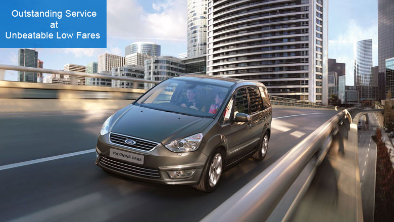

Wimbledon minicab Operating Throughout South West London To All Local And Airport Destinations 24/7

Wimbledon minicab from Haydons Cars in South West London to all parts of the UK. We run a dedicated minicab service to all regional airports and stations. Our reputation as one of South West London's leading minicab service providers is built on our transparent pricing, our focus on customer service and dedication to passenger safety and comfort.
Get Wimbledon minicab Free App from the Google Play or the Apple iTunes App Store and book your next minicab with us in seconds.
Comfort, Value and Safety
We are dedicated to providing our passengers with an outstanding service from the moment we pick them up to safely taking them to their destination. Whether you are travelling locally, to an airport or anywhere else in London or beyond, you can count on us to provide a first class wimbledon minicab service and take you to your destination safely, on time and in a professional and courteous manner.
Airport And Station Transfers
Wimbledon minicab operate a dedicated airport and station transfer service taking our passengers quickly and safely. We know how stressful it can be getting everything ready to travel on a business trip or a vacation which is why we provide a complete pick up and drop off minicab service.
We offer the lowest airport minicab fares available anywhere in South London:
- Gatwick
- Heathrow
- Luton
- Stanstead
We also serve these major transport hubs:
- King's Cross
- Liverpool Street
- Paddington
- Victoria
- Waterloo
- Liverpool Street
- Euston Station
- Stratford
We monitor our passenger's flight times 24 hours a day to make sure we get you to your departure terminal on time or be there ready to pick you up when you return home. Our control centre based in Wimbledon monitors live traffic updates with in London and plans all routes in advance to get you to your destination whether locally or to the airport or other transport hub on time and comfortably with Wimbledon minicab.
First Class Courier Service
Due to Wimbledon minicab extensive knowledge of London and beyond Wimbledon minicab provide a fast and reliable, door to door courier service. No matter how big or small your delivery package, we can deliver it to your required destination quickly and safely. Whether you require a small or a large package to be delivered we have many different types of vehicles in our fleet to carry your package and ensure it reaches its destination quickly and safely.